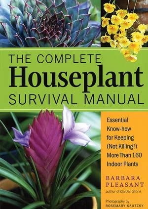

Cursed with a brown thumb? Gardening expert and Mother Earth News contributing editor Barbara Pleasant has come to your rescue with her latest book: The Complete Houseplant Survival Manual: Essential Know-how for Keeping (Not Killing!) More Than 160 Indoor Plants (Storey Publishing, 2005).
Complete with color photos, the book’s identification guide divides more than 160 plants into five easy-to-understand categories so beginners can quickly classify and learn about new plants. This 365 page book also features a list of common houseplants together with their botanical names and provides an extensive section on houseplant care to guide novices in planting, propagation, eliminating pests and more.
The book features many helpful tips, such as tilting a plant to judge by weight how much water is (or is not) in the soil, and reducing trauma to new plants by giving them a couple of weeks to adjust before repotting them.
In her research for the book, Pleasant was struck by the lack of consumer knowledge about many of the houseplants available at garden centers. “When I started working on the book, I took a notebook to a big garden center and made notes on what people bought from the indoor plant display,” she says. “I had to hold back from steering people away from plants with a very short shelf life, so in the book I was careful to cover the pros and cons of blooming houseplants. I also discovered the terrible way many indoor plants are labeled. Often, the only thing on the label is ‘6-inch foliage plant.’ That’s where the plant identification key in this book can be helpful, as well as the color photographs.”
Pleasant encourages readers to explore the world of houseplants, which she thinks holds something for everyone interested in gardening. “I think everyone should keep a few indoor plants, which have the mysterious ability to make us feel good,” she says. “There are indoor plants for every lifestyle, from sun-loving succulents for solar spaces to little terrarium plants for people who travel a lot.”
To order the book, visit Mother Earth Shopping.
|
 STOREY PUBLISHING Cursed with a brown thumb? Gardening expert and Mother Earth News contributing editor Barbara Pleasant has come to your rescue with her latest book. |
|
|